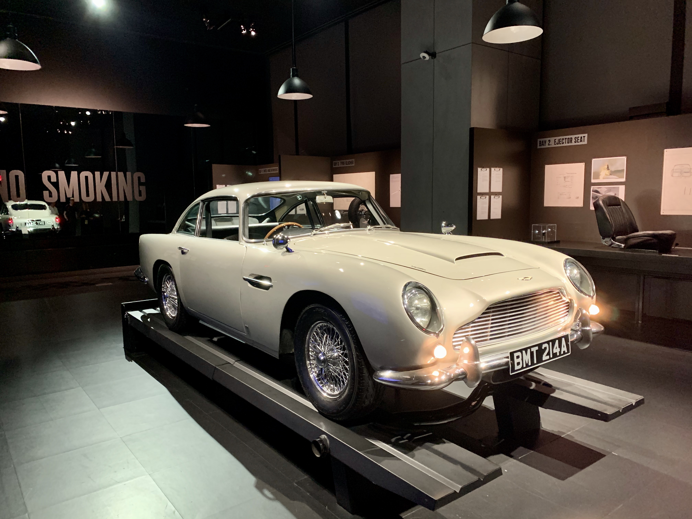

Day 1
The Statue of Liberty is one of the most iconic symbols of Manhattan, it is situated on Liberty Island which is located in the Southwest of Manhattan. This giant classicism copper statue is a gift from the people of France to the people of the United State. It was dedicated in 1886 and had several restores from the late 1930s. A ferry ticket can be purchased to gain access to the island, it departs from Liberty State Park in Jersey City and the Battery in Lower Manhattan and also stops at Ellis Island, which gives you the option to combine multiple trips in one. Disembark at the Battery from the previous tour, walking along with the shore of Battery Park, the East Coast Memorial sits right between the Statue Cruises and Statue of Liberty viewpoint. This memorial honors the missing American servicemen who lost their lives during WWII in the Atlantic Ocean.

Day 2
Taking the subway directly to the World Trade Center station, instead of seeing a pair of skyscrapers, what remained are two square pools which were the basement of the twin tower on a near-empty plaza. Both pools are surrounded by a stone structure with names of all identified victims engraved on it. The memorial museum sits between the south pool and the north pool. You can learn the full story of the attack on September 11, 2001, as well as the contradictions around the cause of the whole event. Heading north to midtown, you can reach the Empire State Building. It is one of the most famous landmarks of NYC, it is a 103-story building with observatories on the top of it. It was build in only 420 days and was the tallest building from 1931 to 1972. The Empire State Building is also featured in the movie King Kong, that at the end of the movie, the giant gorilla climbed on the top of the building and got shot down by airplanes.

Day 3
There is no better place if you would like to experience the atmosphere of NYC other than Times Square. It is one of the busiest destinations in the heart of the Theater District, which is known for shopping, shows, dining, and dazzling lights. Despite how attractive those showcases are, do keep in mind that it is important to shop and consume wisely in order to save a budget for the remaining part of the trip.
Day 4
If you are interested in anything military-related, the Intrepid Sea, Air & Space Museum is a must-go. It is located at the west shore of midtown Manhattan, north of the Lincoln Tunnel. The entire museum is built on an aircraft carrier that served the US Navy in WWII, the Cold War, and the Vietnam War, it was also served as a recovery vessel for NASA. The USS Intrepid was decommissioned in 1974 and was donated as a naval museum in 1981. From then, it became one of the most iconic landmarks of Manhattan. The Brooklyn Navy Yard is also one of the most important sites throughout the history of the US navy. As one of the manufacturing locations of warships served in WWII, the Navy Yard continues its mission as the center of urban manufacturing.
Day 5
There is a special place located in midtown Manhattan for all the 007 fans, the SPYSPACE. It is a museum that combines historical stories and real-life in-person action into an entertaining experience. There you can learn about the techniques used by spies from different countries at various times. Before you enter the exhibition, you will be issued with a special wrist band, by doing the activities including encoding and decoding, surveillance, lie detecting, your ability as a spy will be tested and recorded into your issued wrist band;at the end, you be categorized to different types of spies based on your performance. The museum also contains a section that exhibits the secrets and skills behind the scene of the 007 series with an Aston Martin DB5 displayed in the middle of the first display room.This section explains all the hidden mechanics of this car driven by James Bond in the movie series by using graphs and videos.
